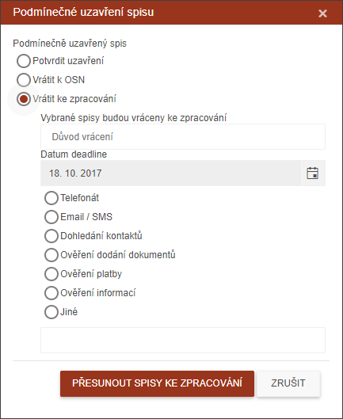

Řešení podmínečného uzavření spisu
Jsou spisy, které inspektor uzavřel mimo hlavní proces (Zápis z OSN, Kontakt s DL). Tyto spisy jsou označené jako Podmínečně uzavřené a je třeba, aby se supervizor vyjádřil k jejich uzavření.
Pokud nelze příslušné tlačítko použít pro výběr jednoho či více spisů, objeví se v pravém horním rohu obrazovky následující informace.
Podmínečně uzavřené spisy lze odbavit trojím způsobem:
